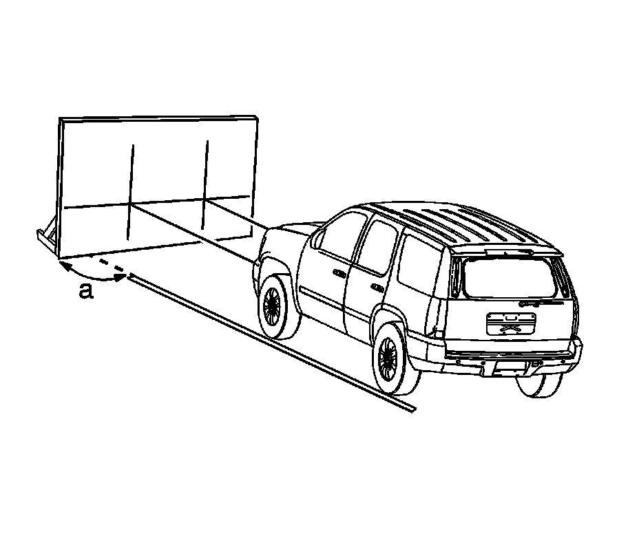
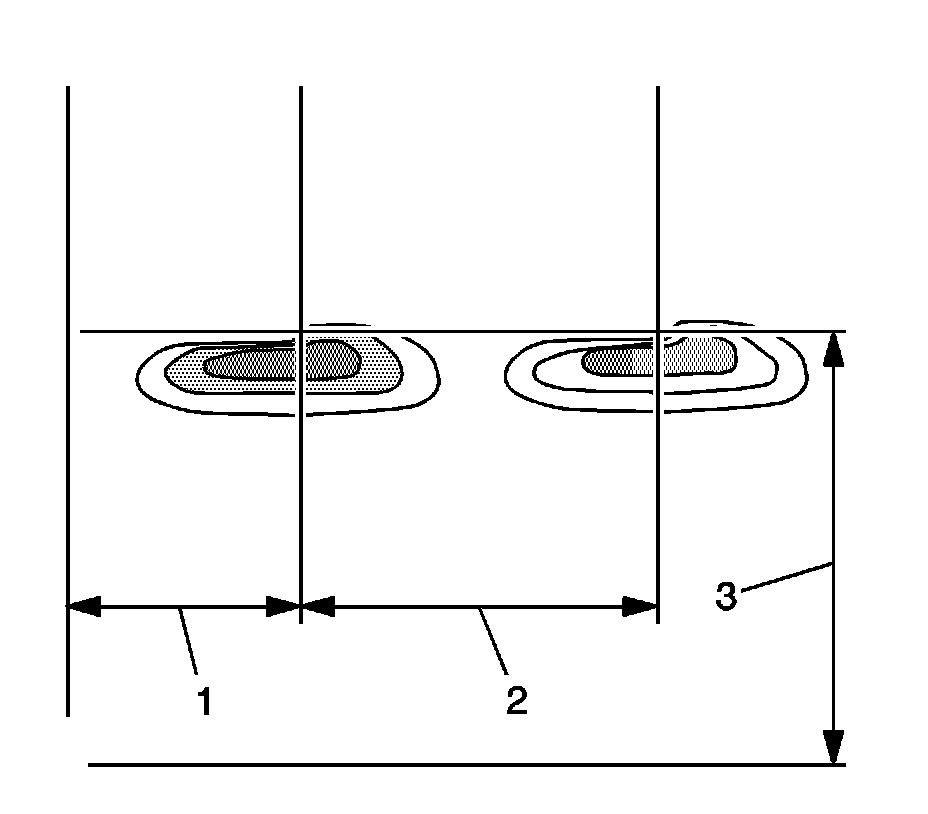
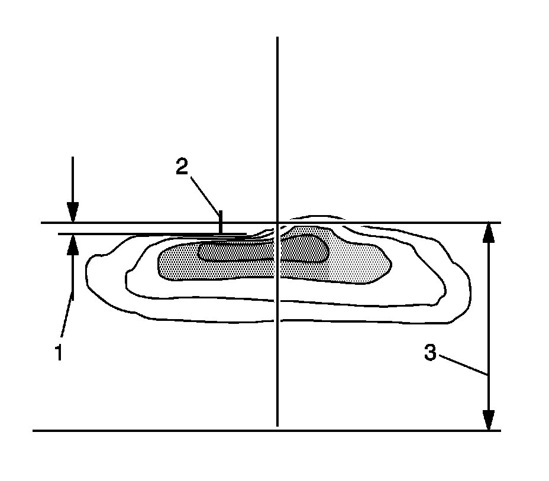

Headlamp: Adjustments
HEADLAMP AIMING
Headlamp aiming is done with the low beam lamps. The high beam lamps will be correctly aimed if the low beam lamps are aimed properly.
Screen Method for Headlamp Aiming (Visual Aim)
The screen method requires an area set up specifically for headlamp aim.

The area should consist of a level surface large enough to allow for a vehicle and an additional 7.62 m (25 ft) as measured from the face of the headlamps to the aiming screen.
The screen should be a wall or other flat surface at least 1.52 m (5 ft) high by 3.66 m (12 ft) wide with a matte white surface well shaded from extraneous light, and 90 degrees to the floor (a). The screen should be provided with a permanent vertical reference line 0.61 m (2 ft) from the left edge of the screen, 2 laterally adjustable vertical tapes, and one vertically adjustable horizontal tape.
After the aiming screen has been set up and located, paint or tape a reference line on the floor 15.24 m (50 ft) from the vertical reference line on the screen. This line should be perpendicular to the aiming screen and a mark placed at 7.62 m (25 ft) from the screen.
Headlamp Aiming Procedure
1. Align the left tires of the vehicle with the reference line extending from the screen with the headlamps aligned with the reference line.
2. Remove any snow, ice or mud from the vehicle.
3. The vehicle should be fully assembled and all other work stopped while the headlamp aiming is being done.
4. The vehicle should contain cargo or be loaded to represent normal vehicle use.
5. Tires should be properly inflated.
6. Rock the vehicle to stabilize the suspension.
7. Measure from the floor to the center of the lamp bulb on the vehicle. Some lamps have an aim dot marked on the lens.
8. At the screen, measure from the floor and place the horizontal tape at the measured distance.

9. Measure from the reference line on the floor to the left headlamp bulb centerline (1).
10. At the screen, measure from the reference line and place the vertical tape at the measured distance.
11. Measure from the reference line on the floor to the right headlamp bulb centerline (3).
12. At the screen, measure from the reference line and place the vertical tape at the measured distance.
13. Turn the headlamps ON.
14. Block the light from projecting onto the screen from the passenger side headlamp. This will allow the cutoff in the beam pattern from the drivers side to be more pronounced for easier aim verification.
15. On this vehicle you will be verifying the aim of the vertical cutoff on the left side of the lamp vertical bulb centerline as it is projected onto the aim board.
IMPORTANT: DO NOT cover the headlamp, this may cause excessive heat build up.
16. If the location of the cutoff projected onto the board differs, an adjustment to the beam pattern location is necessary.

17. Adjust the vertical headlamp adjustment screw until the Left Gradient Line (Cutoff Line) is set -2.0 inches below the Horizontal Axis within 2.0 inches (2) measured at 25 feet.
18. Verify proper aim location.
19. Repeat the aiming procedure for the passengers side headlamp while blocking the light from projecting onto the screen from the drivers side headlamp.